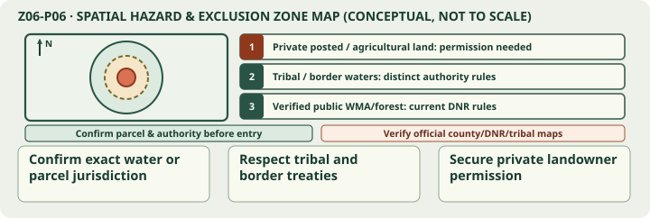

Z06-P06 · Hunting and fishing · New manuscript
Border Waters, Tribal Jurisdictions and Private-Land Permission
Respect overlapping state-border, federal, tribal, and private-property jurisdictions governing hunting and fishing access.
When it applies · Boundary waters, Lake Superior, Mississippi/St. Croix/Red River borders, tribal reservations, and private farmland/forests.
Equipment · Current parcel/public-land map, written landowner permission where applicable, border-water rules.

Actions
- Verify special reciprocal or separate border-water regulations on Minnesota boundary waters with Wisconsin, Iowa, North Dakota, South Dakota, and Ontario.[H01, H02]
- Recognize that tribal reservation lands and ceded-territory treaty frameworks carry distinct sovereign wildlife and fisheries authorities; check applicable tribal and DNR notices.[H01, H02]
- Obtain explicit permission before entering posted or agricultural private land, obeying Minnesota trespass statutes and leaving gates and crops undisturbed.[H02]
Failure recognition · Assuming a Minnesota state license authorizes entry onto private agricultural fields, reservation waters, or opposite-state shorelines causes trespass and poaching violations.[H01, H02]
Verify · Parcel ownership, border-water agreement, or tribal jurisdiction rules are verified before launching or walking afield.[H01, H02]
Stop or change course · Stop immediately at posted boundaries, unverified reservation borders, or uncertain property lines.[H01, H02]
Evidence and editorial notes
- H01 · Minnesota DNR · Minnesota Fishing Regulations (Current web edition)
- Section: Licensing, seasons, limits, and waterbody-specific rules · Conditions: Minnesota angling across inland, border, and designated waters
Support: Anglers must hold a valid license unless explicitly exempt and verify current season dates, possession limits, size slots, and special waterbody rules before fishing.
Limitations: Regulations change annually and differ on border waters, trout streams, and tribal/ceded territories; no emergency creates an automatic legal exemption. · Conflicting evidence: None noted.
Editorial note: Establishes Z06 fishing authority gate. · Specialist reviewer: Minnesota DNR fisheries and legal reviewer
Primary source · checked 2026-11-25 - H02 · Minnesota DNR · Minnesota Hunting and Trapping Regulations (Current web edition)
- Section: Hunting licenses, zones, seasons, and legal methods · Conditions: Minnesota big game, small game, and bird hunting
Support: Hunters must verify current license, permit-area, season, legal-hours, blaze-clothing, and method rules with the governing authority prior to afield activity.
Limitations: Private-land trespass law, municipal ordinances, and tribal jurisdiction apply separately; emergencies do not suspend wildlife law. · Conflicting evidence: None noted.
Editorial note: Establishes Z06 hunting authority gate. · Specialist reviewer: Minnesota DNR wildlife law reviewer
Primary source · checked 2026-11-25
Source lineage · New manuscript (Z06 P17 jurisdictional boundaries) · Classification · New manuscript.